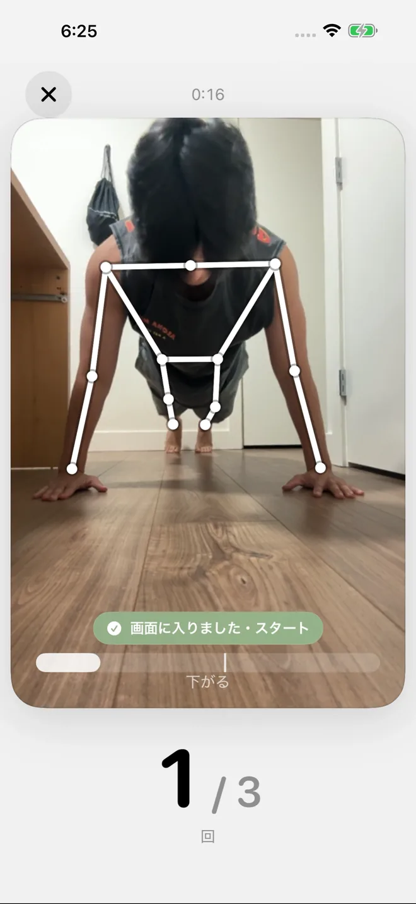
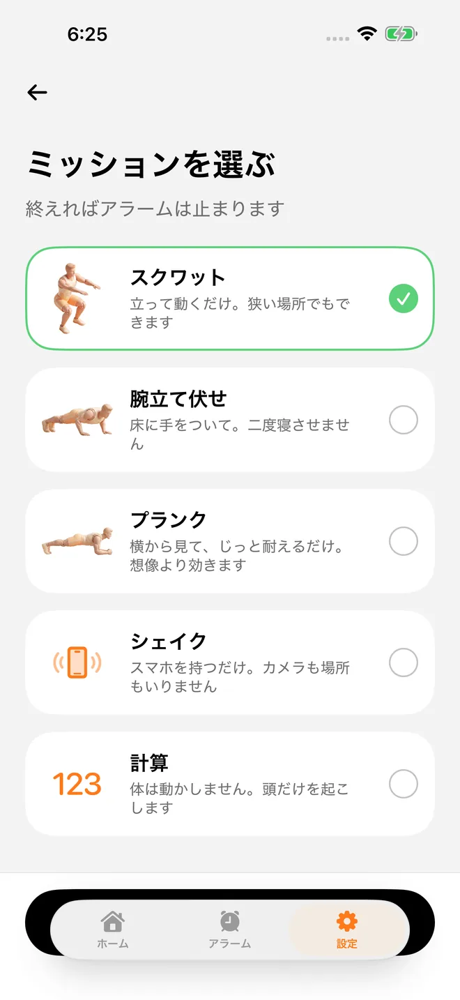
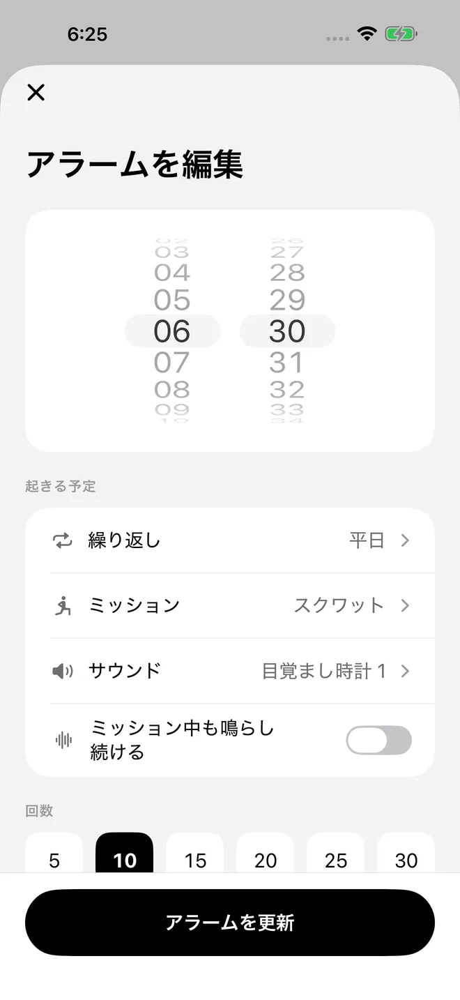
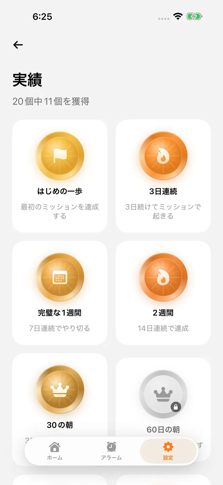

消音中でも、集中モード中でも鳴ります
起きられない朝を、
終わりにする。
Sunnyは、スクワットや腕立て伏せを終えるまで止まらないアラームです。 カメラが回数を数えるので、体を起こさないと朝は始まりません。
iPhone・iOS 26以降。日本語。ご利用には有料サブスクリプションが必要です。


使い方
3ステップで、
明日の朝が変わる
夜のうちに決めておくのは、時刻とミッションだけ。
-
01

アラームをつくる
時刻を決めて、ミッションを選ぶだけ。スクワット、腕立て伏せ、プランク、ダンス、シェイク、計算の6種類から選べます。
-
02
ミッションをこなす
鳴ったら、前の晩に選んでおいたミッションを終えるまで止まりません。回数はカメラが数えます。
-
03

止まったころには、起きている
終えたときには、もう体が動いています。続けた朝は連続記録と実績として積み上がります。
アラームの先へ
続けられるように、つくりました
-
カメラが回数を数えます
映像はiPhoneの中だけで解析され、保存も送信もされません。ベッドの中からごまかすことはできません。
-
連続記録
ミッションを終えて起きた朝がつながっていきます。途切れたら、また1日目から。
-
実績と記録
起きた時刻も、続いた日数も、あとから見返せます。20個の実績が、続けた分だけ開いていきます。
-
アプリの削除をブロック
オンにすると、ミッションが終わるまでSunnyを消せません。オフにするのも、あなた自身がいつでもできます。
よくある質問
FAQ
消音モードでも鳴りますか？
鳴ります。SunnyはiOS 26のアラーム機能（AlarmKit）を使っているため、消音中でも集中モード中でも、設定した時刻に鳴ります。そのぶんiOS 26以降のiPhoneが必要です。
ミッションを終えたと、どう判断していますか？
カメラが体の動きを見て、回数を数えています。解析はすべてiPhoneの中だけで行われ、映像が保存されることも、どこかに送信されることもありません。くわしくはプライバシーポリシーをご覧ください。
どんなミッションがありますか？
スクワット、腕立て伏せ、プランク、ダンス、シェイク、計算の6種類です。アラームごとに選べるので、平日は腕立て伏せ、週末は計算、といった使い分けもできます。
途中で止めてしまったら？
ミッションを終えずにアラームを止めると、Sunnyは数秒後にまた鳴ります。二度寝のために止めても、戻ってきます。
連続記録はどう数えますか？
ミッションを終えて起きた朝が続くほど伸びていきます。1日でも途切れると、また1日目からです。
料金はいくらですか？
Sunny プレミアム（自動更新サブスクリプション）で、年額プランが¥5,400／年、月額プランが¥640／月です。ご利用にはご登録が必要で、無料で使える機能はありません。管理・解約は、iOSの「設定」アプリ内の「Apple アカウント」から「サブスクリプション」を開いて行えます。利用規約もあわせてご覧ください。